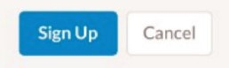

Мой Справочник | WEB-DESIGN | Формы
Меньше рамок, границ и стилей, видимый контраст (принцип минимализма)
Кнопки |

c = высота шрифта;
|
Самая важная кнопка выглядит соответствуеще. Тёплые тона притягивают. Если поля форма достаточно коротки, то есть смысл задать кнопке ширину как у полей Нужно повторять призыв к действию, дублировать кнопку в различных блоках Правильно располагать НАЗАД-ВПЕРЁД, а не ВПЕРЁД-НАЗАД В большие кнопки легче попасть Отделяйте главные действия от второстепенных  |
||
Поля форм |
Меньше полей, менше кликов. Функциональные кнопки можно отображать при наведении (например на строку товара в таблице) Если полей не много, то имеет смысл сразу их показывать без поп-апов Чекбоксы и радио-кнопки лучше в столбик, в строчку не удобно для пользователей * - такие звёздочки уже не рисуют Группировать поля, схожие по смыслу в отдельные блоки с заголовками Постепенное раскрытие действий, по мере заполнения Форма как предложение, заголовок - подлежащее, кнопка - сказуемое Избегать повторений слов в форме Не нужно заставлять пользователей вводить излишнюю информацию |
|||
Лейблы |
Лучше располагать над полями, если рядом с полями, то лучше выравнивать по правому краю, чтобы не было пустот | |||
Селекты, радио-кнопки, чекбоксы |
Если вариантов выбора менее 6, то лучше делать не select, а радио-кнопки Радио-кнопки лучше располагать столбиком, удобно для пользователей Подтверждение по умолчанию (checked) |
|||